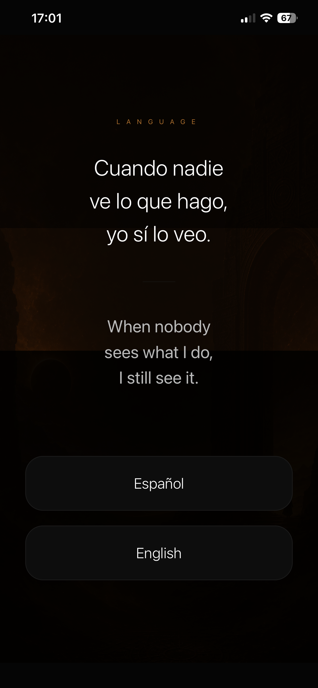
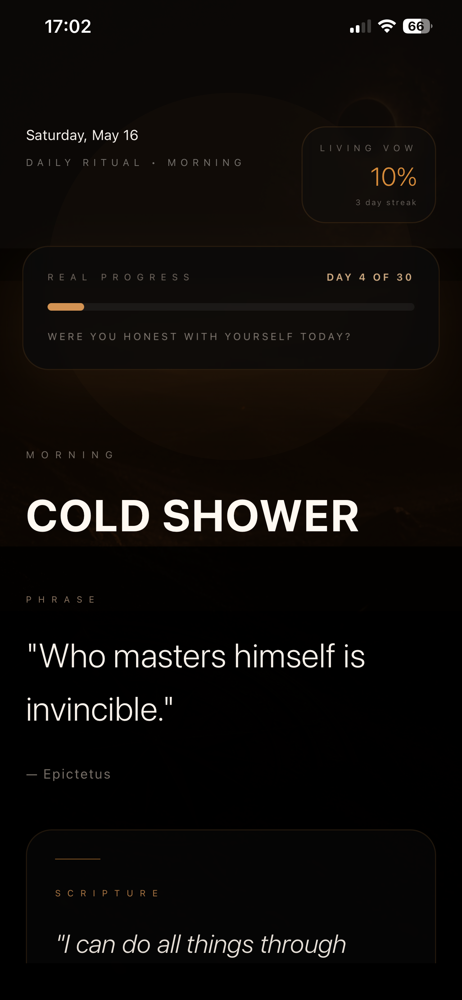
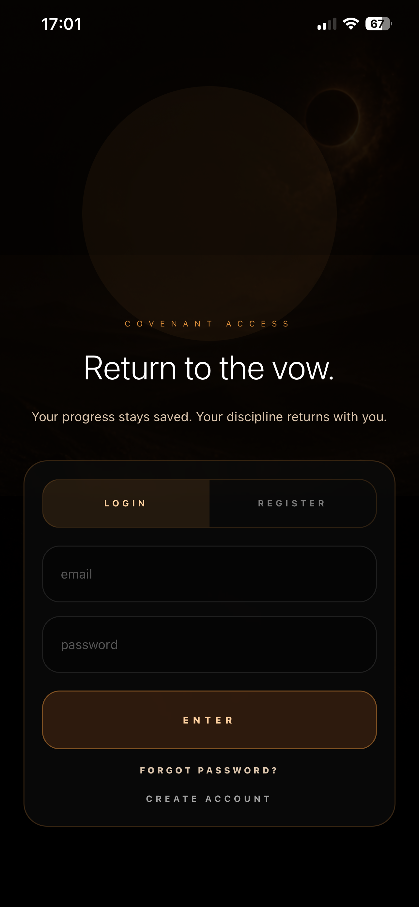
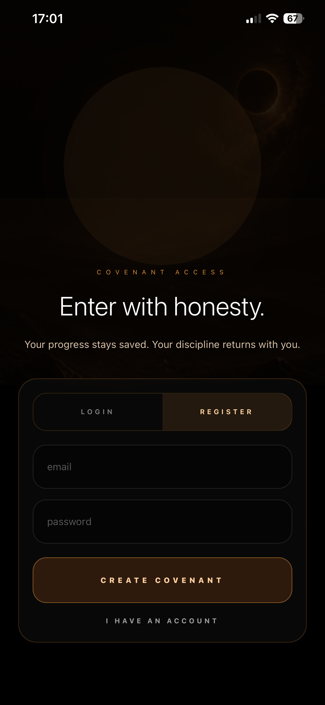
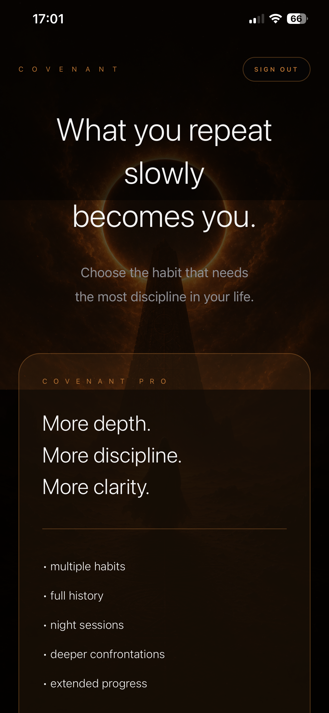
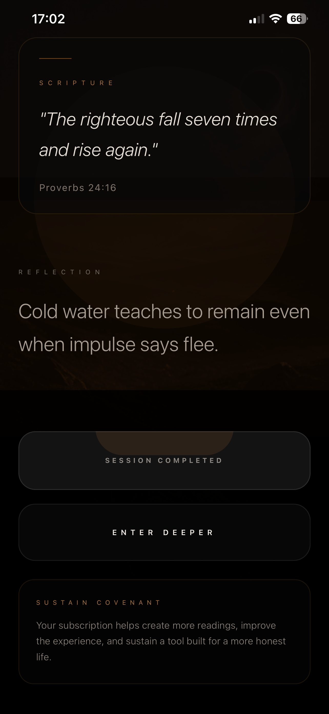
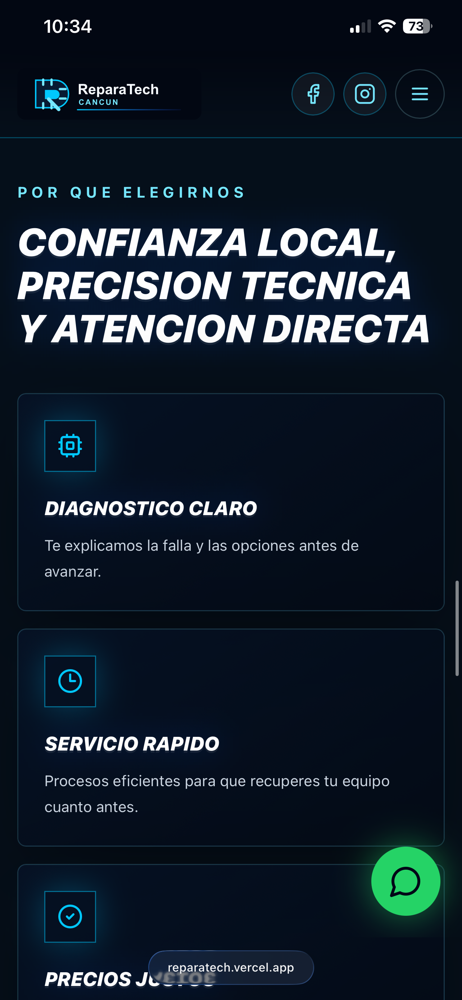

Habit Tracking
Create disciplined routines and track completion over time.
Technology founder portfolio
Software Developer · Entrepreneur · Tech Specialist
Currently studying Software Engineering. More than 10 years of experience in customer service and business administration. Experienced in software development, mobile applications, web platforms, hardware repair, electronics and entrepreneurship.

Available for software, product and technology solutions.

About
Currently studying Software Engineering. More than 10 years of experience in customer service and business administration. Experienced in software development, mobile applications, web platforms, hardware repair, electronics and entrepreneurship.
Projects
Mobile Application
Habit-building and personal discipline platform designed to help users create consistency, accountability and long-term personal growth.
View Case StudyClient Website
Technology services website for a computer and mobile device repair brand, built to clarify services, improve trust and convert visitors into leads.
View Client WorkClient Platform
Luxury yacht rental platform designed for yacht discovery, pricing clarity, availability checks and seamless reservation requests.
View Luxury PlatformCovenant · Flagship Project
Covenant is a production-level habit-building and personal discipline platform designed to help users create consistency, accountability and long-term personal growth.
Overview
The application focuses on habit tracking, progress visualization, discipline systems, premium content and user motivation. Covenant is positioned as a serious personal growth product, not a noisy social feed or a lightweight checklist.
Key Features
Create disciplined routines and track completion over time.
Monitor each day with clear progress states and ritual feedback.
Make consistency visible through streaks and long-term records.
Support deeper discipline flows with premium subscription access.
Protect user progress and connect identity to personal growth data.
Designed and deployed for a consistent iOS and Android experience.
Technology Stack
Mobile App Showcase
Covenant uses a cinematic dark interface, warm gold accents, quiet typography and full-screen rituals to make the product feel deliberate, private and mature.



Screenshot Gallery




Results / Impact
ReparaTech · Client Project
ReparaTech is a technology services brand focused on computer repair, mobile device repair, diagnostics, maintenance and technical support. The work centered on website development, service clarity, responsive design and customer contact flows.

Project Overview
My role was to design and develop the digital presence for the business, including branding support, website structure, service presentation, social media integration and contact paths optimized for inquiries.
Development Process
Adapted ReparaTech’s technical identity into a clean, modern website language.
Structured repair, diagnostics and support offerings so customers can scan quickly.
Prioritized WhatsApp, social links and service navigation to reduce friction.
Features & Functionality
Optimized the experience for phone-first visitors looking for immediate help.
Built clear content sections around local repair services and customer intent.
Designed direct contact paths for quotes, diagnostics and customer support.
Connected Facebook and Instagram entry points to support brand discovery.
Created visual sections for repair categories, trust signals and service benefits.
Aligned the site flow with real customer questions around diagnostics and maintenance.
Responsive Design Showcase
The interface uses a dark technical palette, electric blue accents, strong typography and prominent contact actions to help customers understand services and reach the business quickly.


Technology Stack
Results / Impact
YATCK K CLUB · Client Project
YATCK K CLUB is a luxury yacht rental platform designed to help customers browse yachts, explore private maritime experiences, check availability and submit reservation requests through an elegant interface.

Project Overview
The project objective was to create a modern, mobile-friendly platform that presents the yacht offer with luxury polish while making the booking path clear: choose a yacht, review pricing and availability, then submit a reservation request.
Business Goals
Present yacht rentals as a private club experience with refined visuals and copy.
Expose price, capacity, duration, location and included amenities before inquiry.
Guide visitors from exploration to WhatsApp reservation with minimal friction.
Booking Experience Showcase
The booking flow gives customers a structured path: compare yacht options, select dates, choose duration, enter guest details and send the reservation request through an integrated contact flow.


Yacht Gallery Showcase
Mobile Experience
Large imagery and concise yacht details support fast comparison.
Structured request flow captures date, duration, guest count and contact data.
Elegant typography, dark panels and champagne accents align with hospitality expectations.
Technology Stack
Results / Impact
Skills
Experience
A rare combination of customer-facing judgment, business operations and hands-on engineering that supports both product strategy and execution.
Timeline
Customer Service Foundation
Business Administration
Hardware & Electronics Repair
Software Engineering Studies
Web Platform Development
Mobile Application Development
Entrepreneurship & Product Building
Contact